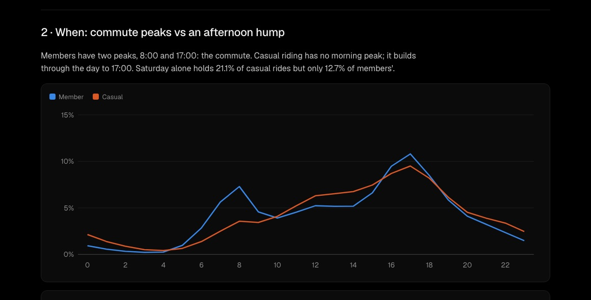

SQL · Analysis · 2026-10
How Chicago Rides
A year of Chicago bike-share trips (6.1 million rides) in SQL: how members and casual riders differ, and where a membership campaign should go.

01 — The problem
Chicago's Divvy bike-share has two kinds of riders: members with an annual pass and casual riders who pay per ride or per day. A classic question for a bike-share analyst: how do the two groups use the bikes differently, and where would a campaign to turn casual riders into members reach the most of them? Divvy publishes every trip, so the answer can come straight from the data.
02 — What I built
A SQLite database of every Divvy trip from September 2025 to August 2026, a set of SQL files that each answer one question, and a one-page report that shows each answer with the SQL behind it.
- Data: 6,115,982 raw rides, 5,951,516 after four documented cleaning rules.
- SQL: CTEs, window functions (
ROW_NUMBERfor medians,RANK,LAGfor month-over-month change, windowedSUMfor shares),CASE, date functions and indexes. - A second opinion: a plain-Python script that recounts the answers from the raw files without SQL and must agree exactly.
- Report: question, answer in plain words, SQL, result table and chart, built from the saved results.
03 — How it was built
- 01
Download a year of trips
Divvy publishes one zip per month on a public server. Twelve months (September 2025 to August 2026, about 230 MB) download in parallel in under a minute. The raw files stay out of the repo; the script can always fetch them again.
- 02
Load it into SQLite and clean it
Python's built-in
sqlite3andcsvmodules load all 6,115,982 rows in about a minute. The cleantripstable is built in SQL with four rules: one row per ride ID, rides between 1 minute and 24 hours, a known rider type, and a start date inside the year studied. Rides with no station, mostly e-bikes parked outside a dock, are kept; only the station questions leave them out.WHERE copy_no = 1 AND ROUND((julianday(ended_at) - julianday(started_at)) * 86400000) BETWEEN 60000 AND 86400000 AND member_casual IN ('member', 'casual') AND started_at >= '2025-09-01' AND started_at < '2026-09-01' - 03
Profile the data before trusting it
One SQL query counts what each rule removed: 35 duplicate IDs, 158,904 rides under a minute, 5,302 over a day, and 225 rides that started on August 31 but sat in the September file (caught when the month query showed a stray August). The counts add up exactly to the 5,951,516 rides kept.
- 04
Answer six questions in SQL
Each question is its own
.sqlfile: rider types, hour of day, day of week, month, where casual riders start, their routes, and ride length. SQLite has noMEDIAN, so the median comes from numbering each group's rides by duration and averaging the middle one or two.WITH ranked AS ( SELECT member_casual, duration_min, ROW_NUMBER() OVER (PARTITION BY member_casual ORDER BY duration_min) AS rn, COUNT(*) OVER (PARTITION BY member_casual) AS n FROM trips) SELECT member_casual, AVG(duration_min) AS median_min FROM ranked WHERE rn IN ((n + 1) / 2, (n + 2) / 2) GROUP BY member_casual; - 05
Recount everything without SQL
check.pyre-reads the raw zips in plain Python, applies the same rules, and asserts its counts equal the SQL results: totals, both rider types, all 12 months, all 24 hours and the top stations. On its first run it disagreed by one ride. A trip lasting exactly 60.000 seconds came out as 0.99999994 minutes in SQL's floating-point date math, so SQL dropped it as "under a minute". Durations now use whole milliseconds, and the two agree exactly. - 06
Build the report
report.pyturns the saved results into one page: for each question, the answer in plain words (every number filled in from the results), the SQL, the table, and a chart drawn as plain SVG with no charting library. Member and casual colors were checked for color-blind separation.
04 — Results
| Members | Casual | |
|---|---|---|
| Share of rides | 65.0% | 35.0% |
| Median ride | 8.7 min | 11.3 min |
| Rides on weekends | 23.3% | 37.1% |
| Round trips | 2.2% | 7.5% |
- Commuters vs leisure: members peak at 8:00 and 17:00; casual riders have no morning peak, and Saturday holds 21.1% of their rides.
- Summer business: the casual share runs from 17.9% in January to 40.8% in July.
- Where: the lakefront and museums. Navy Pier alone had 50,768 casual rides (75.9% of its rides).
- Recommendation: a membership push at lakefront stations on summer weekends, pitched on long leisure rides. That's a recommendation from the patterns, not a tested result.
05 — What I'd do next
- Join daily weather to explain the day-to-day swings.
- Add pricing to estimate what converting casual riders is worth.
- Compare against the previous year once station IDs are matched.